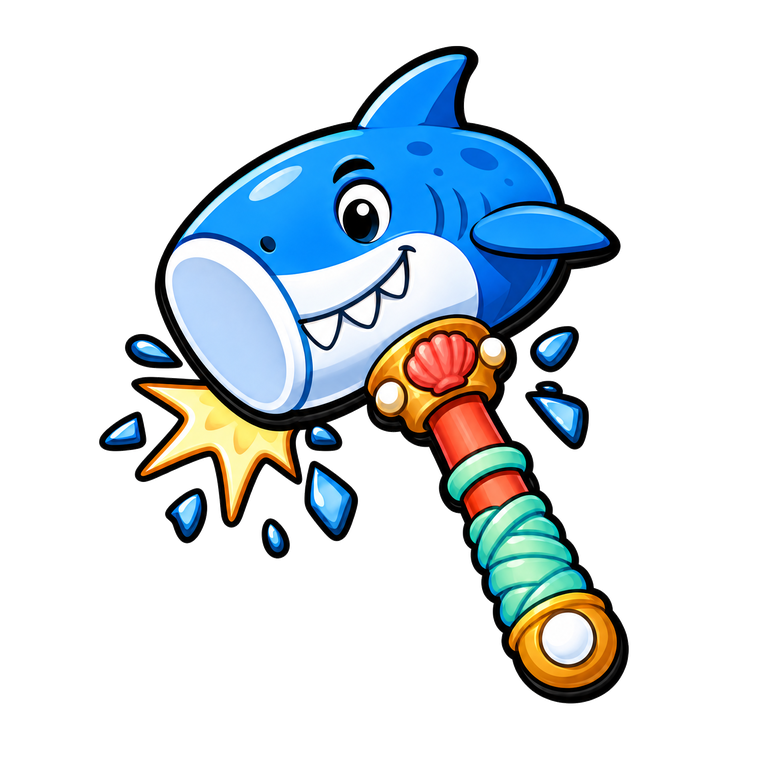
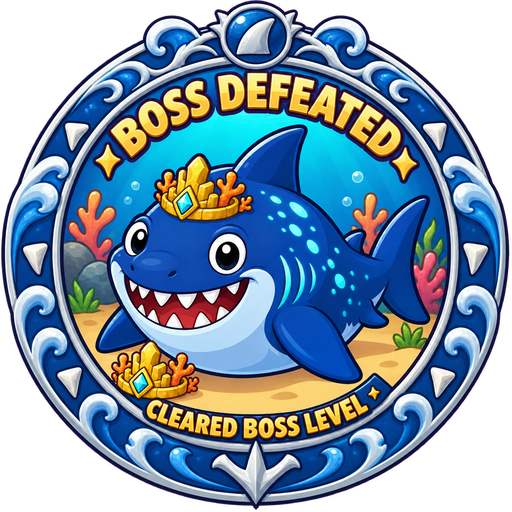
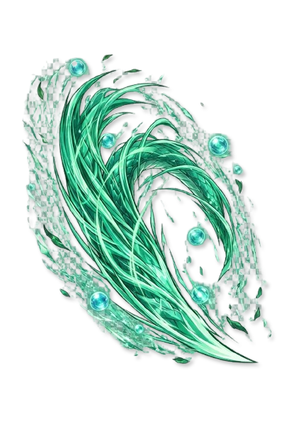
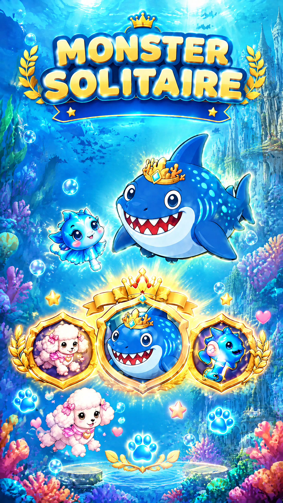

카드가 곧 공격입니다
정상적인 카드 이동이 쌓이면 펫의 공격이 이어집니다. 중요한 순간에는 상어 망치로 카드를 직접 처리하는 손맛도 느껴 보세요.
익숙한 클론다이크 솔리테어에 Draw 1·2·3 난이도, 펫 전투, 몬스터 공략, 콤보의 손맛과 보스 배지 수집을 더했습니다. 힌트와 실행취소, 자동 저장까지 갖춰 차분하게 시작해도 어느새 “한 판만 더”를 외치게 됩니다.


카드의 선택이 전투가 되고, 한 번의 이동이 다음 콤보를 만듭니다.
정상적인 카드 이동이 쌓이면 펫의 공격이 이어집니다. 중요한 순간에는 상어 망치로 카드를 직접 처리하는 손맛도 느껴 보세요.

다음 카드까지 내다보며 연속 이동을 만들면 점수와 콤보가 함께 커집니다. 조용한 퍼즐이 시원한 리듬으로 바뀝니다.
보스 클리어로 얻는 배지마다 시간, 점수, 카드 공개 등 서로 다른 능력이 있습니다. 플레이 스타일에 맞춰 선택하세요.
힌트와 실행취소, 자동 저장을 지원하며 가로·세로 화면 모두에 맞춰 플레이할 수 있습니다.
펫은 단순한 장식이 아닙니다. 속성에 따라 공격 연출과 피격 효과가 달라지고, 카드 이동이 전투의 흐름으로 연결됩니다. 같은 스테이지도 펫과 배지 조합에 따라 새롭게 느껴집니다.

처음에는 카드 흐름을 읽어 보세요.
Draw 1부터 Draw 3까지 자신의 실력에 맞는 난이도를 고르고, 뒤집힌 카드를 열어 파운데이션으로 보낼 카드와 태블로에 남겨 둘 카드를 구분해 보세요.
한 번의 이동을 아껴 콤보를 만들어 보세요.
바로 움직일 수 있는 카드라도 다음 연결까지 생각하면 더 큰 연속 정리가 가능합니다.
보스 배지를 직접 비교해 보세요.
빠른 클리어, 점수 경쟁, 초반 안정성 중 원하는 스타일에 맞춰 능력을 선택하세요.
펫과 배지 조합을 바꿔 다시 도전해 보세요.
같은 스테이지도 선택한 능력과 카드 순서에 따라 전혀 다른 판처럼 느껴집니다.
이미지나 버튼을 클릭하면 Google Play의 Monster Solitaire 페이지로 이동합니다.